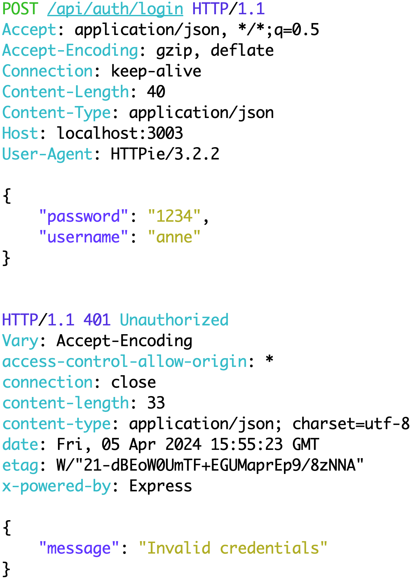
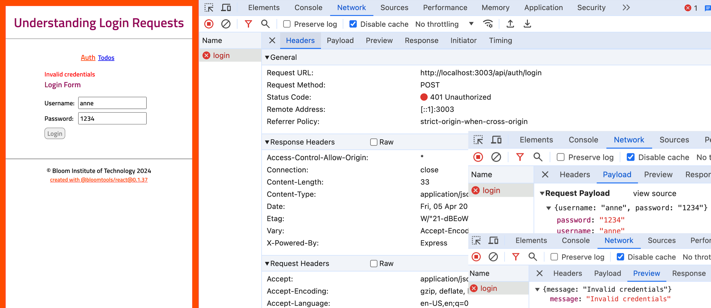
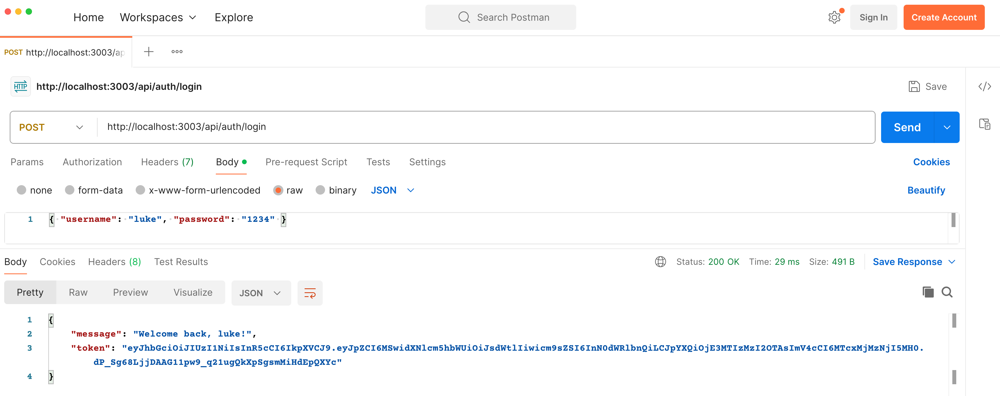
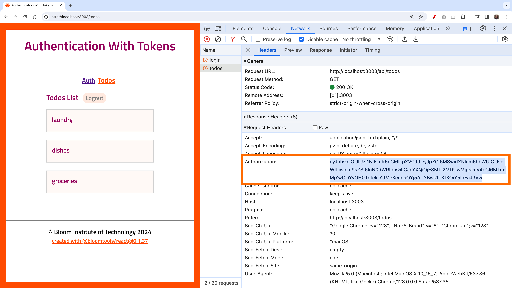

Module 2: Client-Side Auth - Web Unit 3 Sprint 11
Understanding Login Requests
This lesson will cover login requests, a fundamental aspect of web development. We will explore how a simple action like logging into a website involves making a network request, focusing on the POST request method, headers and payloads. By the end of this Learning Objective, you'll understand the structure of requests and responses and how to inspect them using tools like HTTPie, Chrome Developer Tools, and Postman.
Ready to dive into the details? Let's get started!
How to Build It
Exploring the Request-Response Cycle
When you enter credentials on a login page, you're actually sending a POST request to the server. This request includes headers—key-value pairs with information about the request—and a payload, the data you're sending, typically in JSON format. The server then processes this request and sends back a response, also structured with headers and a body, which might contain a welcome message or an error code, like the 401 Unauthorized status.
http request and response
Inspecting Requests with Developer Tools
Using Chrome's Developer Tools, you can see the details of the request you've made, including the URL, method, status code, headers, and the payload you've sent. Similarly, the response from the server, including its headers and body, can be inspected. This allows you to understand what information is being exchanged and debug issues related to login processes effectively.
network tab in chrome
The Role of Tokens
In successful login attempts, the server responds with a token—a string that represents your authentication status. This token can be used for subsequent requests to access protected resources, signifying a crucial element in web security and session management.
successful login
Practical Tools for Inspecting HTTP Traffic
Beyond Chrome's Developer Tools, tools like HTTPie and Postman offer robust capabilities for inspecting and debugging HTTP traffic. They allow for manual assembly and inspection of requests and responses, providing a deeper understanding of the underpinnings of web communication.
Through Postman, for instance, you can construct a login request by specifying the method, URL, and payload, and then send it off to see the response. This hands-on approach not only demystifies the login process but also equips you with practical skills for your web development toolkit.
Handling Authentication with Tokens
This learning objective introduces token authentication, a method allowing applications to authenticate users and manage sessions. We will cover the complete process from logging in and receiving a token to using this token for accessing protected resources and handling common challenges.
How to Build It
Introduction to Token Authentication
Instead of providing username and password all the time, tokens allow you to login once and access a multitude of services. Here's how it works:
- Login: You submit your credentials (username/password) to a login endpoint.
- Receive a Token: If your credentials are correct, the server sends back a JSON Web Token (JWT).
- Use the Token: You use this token to access protected resources without needing to log in again.
JWTs are secure, efficient, and stateless. They're composed of three parts: Header, Payload, and Signature. Together, they ensure your token is valid and hasn't been tampered with.
Storing the Token
Once received, the token must be stored for future use. There are different approaches for this. One option is to use the browser's local storage. This is simple but it has the downside that any script running on the page can access local storage, so it's crucial that the token be short-lived, and not contain any sensitive information:
// inside the login form component
const handleSubmit = async (event) => {
event.preventDefault()
try {
const { data } = await axios.post(
`/api/auth/login`,
{ username, password },
)
localStorage.setItem('token', data.token)
} catch (err) {
setError('An error occurred. Please try again.')
}
}Redirecting After Successful Login
Successful authentication may redirect the user to a protected area. This involves utilizing React Router's navigation hook:
// inside the login form component
const navigate = useNavigate()
const handleSubmit = async (event) => {
event.preventDefault()
try {
const { data } = await axios.post(
`/api/auth/login`,
{ username, password },
)
localStorage.setItem('token', data.token)
navigate('/todos') // redirecting the user after successful login
} catch (err) {
setError('An error occurred. Please try again.')
}
}Using the Token for Protected Assets
Once the user lands on the new route, a request may go off to requests assets that are meant for authenticated users. Without a valid token, the server will respond with a 401 Unauthorized error.
Calling an endpoint that requires authentication involves fishing the token from local storage and appending it to the Authorization header of the request. The token is just as good as valid credentials (as long as the token hasn't expired).
// inside the component that requests protected assets
useEffect(() => {
const token = localStorage.getItem('token') // grab the token
const fetchTodos = async () => {
try {
const { data } = await axios.get(
'/api/todos', // the endpoint that requires auth
{ headers: { Authorization: token } }, // this appends the header
)
setTodos(data) // handle success
} catch (error) {
// handle failure
}
}
fetchTodos()
}, [])See the Authorization header going out carrying the token:
Implementing Protected Routes
This learning objective covers how to prevent users that are not logged in from accessing certain parts of your app. Real security happens on the back end, with the server refusing access to unauthorized users, but it's still important for user experience to be sent to the login screen if an attempt is made to perform an operation that requires auth. Let's take a look at how!
How to Build It
Redirecting Back to Login
If a component that loads protected assets cannot find a JSON Web Token in local storage, we will send the user back to the login screen:
// inside the component that requests assets that require authentication
const navigate = useNavigate() // navigation hook from React Router
useEffect(() => {
const token = localStorage.getItem('token') // attempt to get token
if (!token) { // if there isn't a token
navigate('/') // redirect to the login screen
} else {
// perform the authenticated request
const fetchTodos = async () => {
try {
const response = await axios.get(
'/api/todos',
{ headers: { Authorization: token } },
)
setTodos(response.data)
} catch (error) {
// handle error
}
}
fetchTodos()
}
}, [])Handling Expired Tokens
Even if a token exits, it might be stale! If this happens, the request will go out, but the server will respond with the dreaded 401 Unauthorized error. In this case, we'd like to flush the stale token from local storage and redirect the user to the login screen. These two operations, together, constitute something of a "logout flow". Let's implement a function for this:
const logout = () => {
localStorage.removeItem('token')
navigate('/')
}On 401, we will use the logout function to send the user back to the login screen. These changes make it so that this route cannot be accessed without a token, and also forces users to auth again if the token expires:
export default function Todos() {
const [todos, setTodos] = useState([])
const navigate = useNavigate()
const logout = () => {
localStorage.removeItem('token')
navigate('/')
}
useEffect(() => {
const token = localStorage.getItem('token')
if (!token) {
navigate('/') // back to login screen
} else {
const fetchTodos = async () => {
try {
const response = await axios.get(
'/api/todos',
{ headers: { Authorization: token } }
)
setTodos(response.data)
} catch (error) {
if (error?.response?.status == 401) logout() // stale token gone, back to login screen
// we must still handle gracefully errors by other causes...
}
}
fetchTodos()
}
}, [])
// the rest of the Todos component...Manual Logout Functionality
The logout function we just implemented can also be wired to a "Logout" button in the user interface, to allow users to log out themselves.
Module 2 Project: Frontend Auth
This project will have you build register and sign in functionality to an auth form. On register, you will welcome the new user. On login, you will pull an authentication token from the response, and save it to the browser's local storage. This token will be used to obtain protected resources from the server, without having to provide username and password with each request. You will also implement functionality to log users out, and redirect unknown users away from certain routes.
The Module Project contains advanced problems that will challenge and stretch your understanding of the module's content. The solution video is available below in case you need help or want to see how we solved each challenge (note: there is always more than one way to solve a problem). If you can successfully complete all the Module Projects in a sprint, you are ready for the Sprint Challenge and Assessment.
Instructions
The link below takes you to Bloom's code repository of the assignment. You'll need to fork the repo to your own GitHub account, and clone it down to your computer:
Starter Repo: Frontend Auth
- Fork the repository,
- clone it to your machine, and
- open the README.md file in VSCode, where you will find instructions on completing this Project.
- submit your completed project to the BloomTech Portal